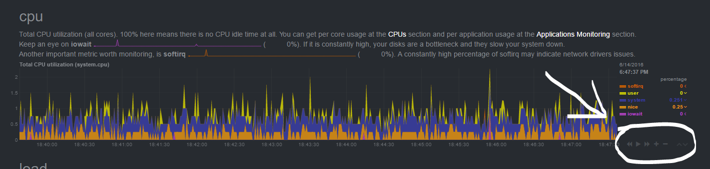
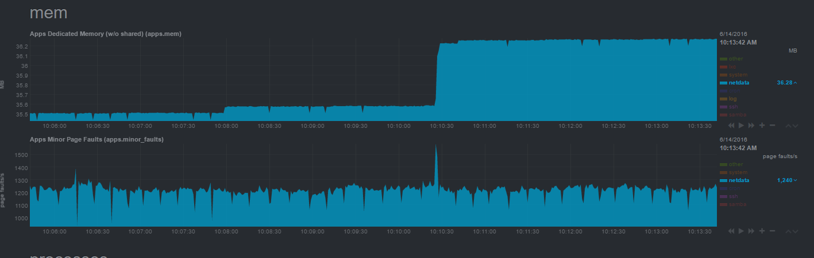
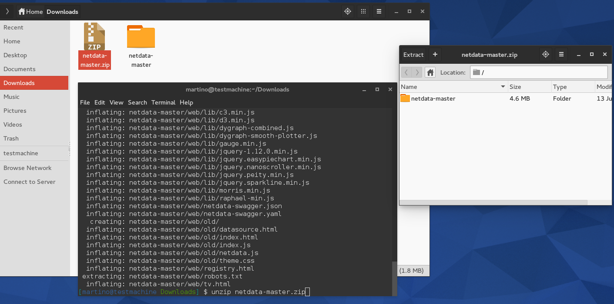
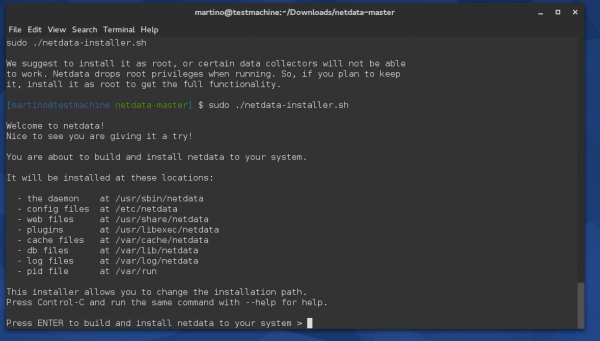
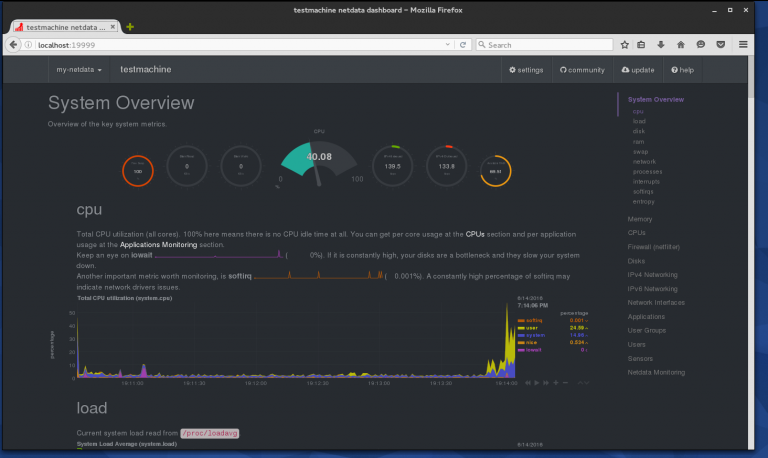

编译自：https://fedoramagazine.org/monitor-linux-netdata/
作者： Martino Jones
原创：LCTT https://linux.cn/article-7576-1.html
译者： GitFuture
本文地址：https://linux.cn/article-7576-1.html
Netdata 是一个实时的资源监控工具，它拥有基于 web 的友好界面，由 FireHQL 开发和维护。通过这个工具，你可以通过图表来了解 CPU，RAM，硬盘，网络，Apache， Postfix 等软硬件的资源使用情况。它很像 Nagios 等别的监控软件；但是，Netdata 仅仅支持通过 Web 界面进行实时监控。
目前 Netdata 还没有验证机制，如果你担心别人能从你的电脑上获取相关信息的话，你应该设置防火墙规则来限制访问。UI 很简单，所以任何人看懂图形并理解他们看到的结果，至少你会对它的快速安装印象深刻。
它的 web 前端响应很快，而且不需要 Flash 插件。 UI 很整洁，保持着 Netdata 应有的特性。第一眼看上去，你能够看到很多图表，幸运的是绝大多数常用的图表数据（像 CPU，RAM，网络和硬盘）都在顶部。如果你想深入了解图形化数据，你只需要下滑滚动条，或者点击在右边菜单的项目。通过每个图表的右下方的按钮， Netdata 还能让你控制图表的显示，重置，缩放。

Netdata 图表控制
Netdata 并不会占用多少系统资源，它占用的内存不会超过 40MB。因为这个软件是作者用 C 语言写的。

Netdata 显示的内存使用情况
要下载这个软件，你可以访问 Netdata 的 GitHub 页面，然后点击页面左边绿色的 "Clone or download" 按钮 。你应该能看到以下两个选项：
一种方法是下载 ZIP 文件。它包含仓库里的所有东西。但是如果仓库更新了，你需要重新下载 ZIP 文件。下载完 ZIP 文件后，你要用 unzip 命令行工具来解压文件。运行下面的命令能把 ZIP 文件的内容解压到 netdata 文件夹。
$ cd ~/Downloads$ unzip netdata-master.zip

解压 Netdata
没必要在 unzip 命令后加上 -d 选项，因为文件都是放在 ZIP 文件的根文件夹里面。如果没有那个文件夹， unzip 会把所有东西都解压到当前目录下面（这会让文件非常混乱）。
还有一种方式是通过 git 下载整个仓库。当然，你的系统需要安装 git。Git 在 Fedora 系统是默认安装的。如果没有安装，你可以用下面的命令在命令行里安装 git。
$ sudo dnf install git
安装好 git 后，你要把仓库 “clone” 到你的系统里。运行下面的命令。
$ git clone https://github.com/firehol/netdata.git
这个命令会在当前工作目录克隆（或者说复制一份）仓库。
有些软件包是你成功构造 Netdata 时候需要的。 还好，一行命令就可以安装你所需要的东西（这写在它的安装文档中）。在命令行运行下面的命令就能满足安装 Netdata 需要的所有依赖关系。
$ dnf install zlib-devel libuuid-devel libmnl-devel gcc make git autoconf autogen automake pkgconfig
当所有需要的软件包都安装好了，你就 cd 到 netdata/ 目录，运行 netdata-installer.sh 脚本。
$ sudo ./netdata-installer.sh
然后就会提示你按回车键，开始安装程序。如果要继续的话，就按下回车吧。

Netdata 的安装
如果一切顺利，你的系统上就已经安装并且运行了 Netdata。安装脚本还会在相应的文件夹里添加一个卸载脚本，叫做 netdata-uninstaller.sh。如果你以后不想使用 Netdata，运行这个脚本可以从你的系统里面卸载掉 Netdata。
你可以通过 systemctl 查看它的运行状态。
$ sudo systemctl status netdata
既然我们已经安装并且运行了 Netdata，你就能够通过 19999 端口来访问 web 界面。下面的截图是我在一个测试机器上运行的 Netdata。

关于 Netdata 运行时的概览
恭喜！你已经成功安装并且能够看到漂亮的外观和图形，以及你的机器性能的高级统计数据。无论是否是你个人的机器，你都可以向你的朋友们炫耀，因为你能够深入的了解你的服务器性能，Netdata 在任何机器上的性能报告都非常出色。
via: https://fedoramagazine.org/monitor-linux-netdata/
作者：Martino Jones 译者：GitFuture 校对：wxy
编译自：https://fedoramagazine.org/monitor-linux-netdata/
作者： Martino Jones
原创：LCTT https://linux.cn/article-7576-1.html
译者： GitFuture
本文由 LCTT 原创翻译，Linux中国首发。也想加入译者行列，为开源做一些自己的贡献么？欢迎加入 LCTT！
翻译工作和译文发表仅用于学习和交流目的，翻译工作遵照 CC-BY-NC-SA 协议规定，如果我们的工作有侵犯到您的权益，请及时联系我们。
欢迎遵照 CC-BY-NC-SA 协议规定转载，敬请在正文中标注并保留原文/译文链接和作者/译者等信息。
文章仅代表作者的知识和看法，如有不同观点，请楼下排队吐槽 :D
只能监控本机。没有 agent。1来自浙江杭州的 QQ Browser 9.4|Windows 10 用户 发表于 2016-7-19 11:48 的评论：只能单机2linux [Chrome 50.0|Mac 10.11] 发表于 2016-7-19 21:41 的评论：怎么会只能单机——这是基于 Web 的，显然可以通过任何浏览器来远程访问。文章中只是为了演示，才用了 localhost 而已。另外，所占用的端口也不是默认的80 ，如果你的80端口没用，可以修改用这个端口。有时候别的端口防火墙会挡住。3来自浙江杭州的 QQ Browser 9.4|Windows 10 用户 发表于 2016-7-20 18:04 的评论：可以集中收集？还不是一个程序一台机器
可以集中收集？还不是一个程序一台机器1来自浙江杭州的 QQ Browser 9.4|Windows 10 用户 发表于 2016-7-19 11:48 的评论：只能单机2linux [Chrome 50.0|Mac 10.11] 发表于 2016-7-19 21:41 的评论：怎么会只能单机——这是基于 Web 的，显然可以通过任何浏览器来远程访问。文章中只是为了演示，才用了 localhost 而已。另外，所占用的端口也不是默认的80 ，如果你的80端口没用，可以修改用这个端口。有时候别的端口防火墙会挡住。
怎么会只能单机——这是基于 Web 的，显然可以通过任何浏览器来远程访问。文章中只是为了演示，才用了 localhost 而已。另外，所占用的端口也不是默认的80 ，如果你的80端口没用，可以修改用这个端口。有时候别的端口防火墙会挡住。1来自浙江杭州的 QQ Browser 9.4|Windows 10 用户 发表于 2016-7-19 11:48 的评论：只能单机
Linux.CN © 2003-2016 Linux中国 | Powered by DX | 图片存储于七牛云存储
京ICP备05083684号-1 京公网安备110105001595
服务条款 | 除特别申明外，本站原创内容版权遵循 CC-BY-NC-SA 协议规定


分享到微信朋友圈
打开微信，点击底部的“发现”，
使用“扫一扫”将网页分享至朋友圈。